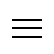
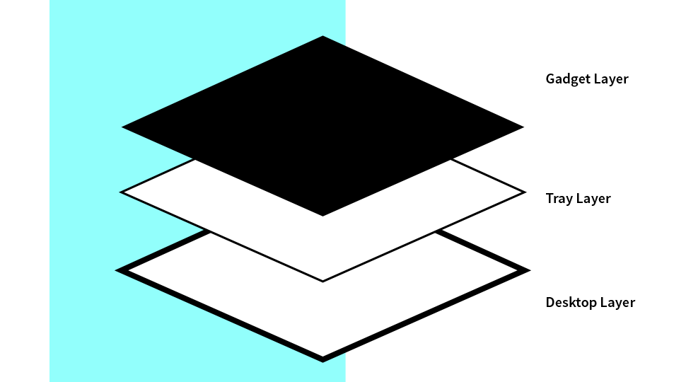
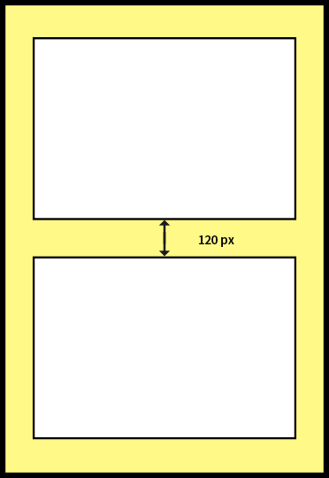
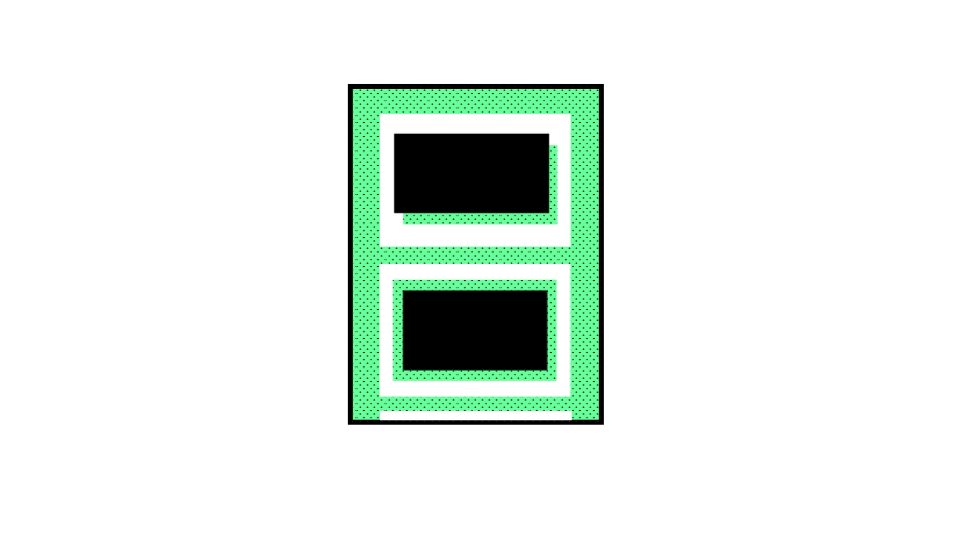
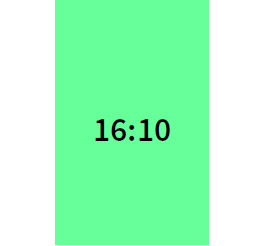
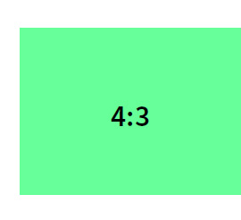
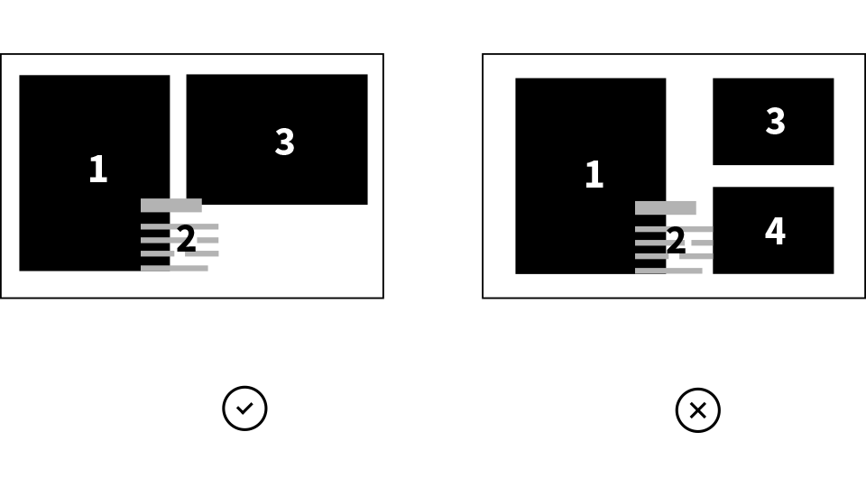

<!--
 So you will I'm using a lot fo col-md-*, col-lg-*, ...
 It's just the bootstrap grid
 http://getbootstrap.com/css/#grid

 the img-responsive is also a bootstrap class that resize your image correctly and that depends on the viewport
-->

<!DOCTYPE html>

<html>

<head>

    <meta charset="utf-8">
    <!-- View port are necessary for the responsive to keep the scale check the bootstrap website it explains (very quickly though) -->
    <meta name="viewport" content="width=device-width, initial-scale=1">
    <title>Digital Design Language for Bestseller</title>
    <link href='https://fonts.googleapis.com/css?family=Source+Sans+Pro:400,200,300,600,700,900,200italic,300italic,400italic,600italic,900italic'
          rel='stylesheet' type='text/css'>
    <link rel="stylesheet" href="https://maxcdn.bootstrapcdn.com/bootstrap/3.3.7/css/bootstrap.min.css"
          integrity="sha384-BVYiiSIFeK1dGmJRAkycuHAHRg32OmUcww7on3RYdg4Va+PmSTsz/K68vbdEjh4u" crossorigin="anonymous">
    <link rel="stylesheet" type="text/css" href="bower_components/fullpage.js/jquery.fullPage.css"/>


    <link rel="stylesheet" href="css/main.css" type="text/css">
    <link rel="stylesheet" href="css/navbar.css">
    <link rel="stylesheet" href="css/responsive.css">

</head>


<div class="iconNav"></div>

<div>

    <div class="nav" id="container">
        <i class="iconClose"></i>
        <ul class="navcon ">
            <li><a href="#homepage-nav">Homepage</a></li>
            <li><a href="#overview">Overview</a></li>
            <li><a href="#desktop-nav">Desktop Layer</a></li>
            <li><a href="#tray-nav">Tray layer</a>

                <ul class="submenu">
                    <li><a href="#tray-style">Different styles of Trays</a></li>
                    <li><a href="#spacing">Spacing</a></li>
                    <li><a href="#tearoff">Tear-off Area</a></li>

                </ul>
            </li>

            <li><a href="#gadget-nav">Gadget Layer</a>

                <ul class="submenu">
                    <li><a href="#img-crop">Image</a></li>
                    <li><a href="#text">Text</a></li>
                    <li><a href="#buttons">Buttons</a></li>
                    <li><a href="#video">Video</a></li>
                    <li><a href="#animation">Animation</a></li>

                </ul>
            </li>

            <li><a href="#layout-rules">Layout Rules</a>

                <ul class="submenu">
                    <li><a href="#axis">Axis</a></li>
                    <li><a href="#safe-area">Safe Area</a></li>
                    <li><a href="#balance">Balance and Rhythm</a></li>
                    <li><a href="#separate">Separate Text From Images</a></li>
                    <li><a href="#composition">Composition</a></li>
                    <li><a href="#three-elements">Three Elements In One Row</a></li>
                    <li><a href="#colors-nav">Colors</a></li>

                </ul>

            </li>

        </ul>
    </div>

</div>
<div class="col-xs-offset-0 col-sm-offset-2 col-md-offset-2 col-lg-offset-2 col-xs-12 col-sm-10 col-md-10 col-lg-10">


    <div id="fullpage">


        <div class="section" id="homepage-nav">

            <div class="content row" id="homepage">
                <div class="col-xs-6 col-sm-6 col-md-6 col-lg-6">
                    
                </div>

                <div class="col-xs-6 col-sm-6 col-md-6 col-lg-6">
                    <section>
                        <ul id="links">
                            <li id="only">
                                <a href="http://www.only.cn">
                                    
                                </a>
                            </li>
                            <li id="jj">
                                <a href="http://www.jackjones.cn">
                                    
                                </a>
                            </li>
                            <li id="vm">
                                <a href="http://www.veromoda.cn">
                                    
                                </a>
                            </li>
                            <li id="slt">
                                <a href="http://www.selected.cn">
                                    
                                </a>
                            </li>
                        </ul>
                    </section>
                </div>


                <h1 class="title uppercase">Tray Design</h1>
            </div>

        </div>


        <!-- P1 -->
        <div class="section" id="p1">
            <div class="content text-center">

                <div id="p1container">
                    <p class="title">Intentions Behind TRAY Design</p>
                    <div class="rec orange"></div>

                    <p class="text">Aligned concept, aesthetics& philosophy across digital interfaces<br>
                        Re-defining layering & interactions with comprehensive thinking<br>
                        New designs with fashion elements abstracting from latest digital design trends
                    </p>
                </div>


            </div>
        </div>
        <!-- P2 -->
        <div class="section" id="p2">
            <div class="content text-center">

                <div id="p2container">
                    <p class="title">Challenges We Are Facing</p>
                    <div class="rec green"></div>

                    <section>
                        <p class="text">Flat Design trend brought simplicity in but richness out<br>
                            Endless news feeds layout provides instant interactions but ignores thematic content<br>
                            Mobile screens are vertical instead of horizontal<br>
                            Video and animation are invading digital store-fronts
                        </p>
                    </section>

                </div>
            </div>
        </div>

        <!-- P3 Overview -->
        <div class="section" id="overview">
            <div class="content text-center">

                <div id="p3container">
                    <p class="title">Step Into Tray Design</p>
                    <div class="rec orange"></div>


                    <div class="col-md-6">
                        <p class="text">Before making TRAY Design, we looked at the major design trends in recent
                            years, and realized that Flat Design and many other trends are making things so isolated
                            that could not present the implication of the real Fashion world. We decided to restore
                            some of the true effectivevisual layers of the design principles:
                        </p>
                        

                    </div>
                    <div class="col-md-6">
                        
                        <p class="text"> Gadget Layer</p>
                        <p class="text"> Tray Layer</p>
                        <P class="text"> Desktop Layer</P>
                    </div>
                </div>


                <div id="p3para">


                </div>

            </div>
        </div>


        <!--P4 Desktop -->
        <div class="section" id="desktop-nav">

            <div class="content row" id="desktop">
                <div class="hidden-xs col-sm-4 col-md-4 col-lg-4">

                    <div class="container-box">
                        <div class="box">
                            <h2 class="title uppercase">Desktop <br>Layer</h2>
                        </div>
                        <p class="text">
                            No matter when, the desktop is the layer that connects the “surface” of
                            screens with the “virtualized” content we present. Although we usually do not “watch” the
                            wooden tea table and the texture on it, but the “feeling” and “tone” is still “seen” by our
                            subconscious.
                        </p>
                    </div>

                </div>

                <div class="col-xs-12 col-sm-8 col-md-8 col-lg-8">
                    <div class="hidden-sm hidden-md hidden-lg">
                        <h2 class="title uppercase">Desktop Layer</h2>
                        <p class="text">
                            No matter when, the desktop is the layer that connects the “surface” of
                            screens with the “virtualized” content we present. Although we usually do not “watch”
                            the
                            wooden tea table and the texture on it, but the “feeling” and “tone” is still “seen” by
                            our
                            subconscious.</p>
                    </div>

                </div>


            </div>
        </div>

        <!--P5 Tray -->
        <div class="section" id="tray-nav">

            <div class="content row" id="tray">
                <div class="hidden-xs col-sm-4 col-md-4 col-lg-4">

                    <div class="container-box">
                        <div class="box">
                            <h2 class="title uppercase">Tray <br>Layer</h2>
                        </div>
                        <p class="text">The tray layer is floating vertically on the “fixed” desktop layer.
                            Desktop
                            usually indicates the seasonal themes, but all of a sudden could bring bold symbols
                            onto the
                            surface through tearoff areas. <br>Designers are able to hide and reveal key
                            messages when
                            start to build up the desktop - quite handy and funny.
                            <br>
                            The tray layer is also responsible to provide clear borders to users to concentrate
                            on a
                            theme instead of surfing on the infinite scrolling. <br>
                            The tray layer consists of different size of trays: from maximum 1200 pix width
                            (assuming
                            the maximum width of websites is 1920 pix) to minimum 900 pix width (assuming all
                            screens
                            are at least 1024 pix wide). It is providing the variety of layout as well to break
                            the
                            repeating design pattern applied by most of the interfaces.<br>
                            White surface is by default used as the background for interfaces on most of the
                            devices. It
                            is most relaxed environment to present content. We believe that the best design of
                            trays
                            should keep flat, staying none-distracting, works as “white paper” with multiple
                            shaping,
                            without shades.<br>
                            The trays provide a thematic framework to organize text, pictures, buttons and
                            animations in
                            a time-line-based context.
                        </p>
                    </div>

                </div>

                <div class="col-xs-12 col-sm-8 col-md-8 col-lg-8">
                    <div class="hidden-sm hidden-md hidden-lg">
                        <h2 class="title uppercase">Tray Layer</h2>
                        <p class="text">The tray layer is floating vertically on the “fixed” desktop layer. Desktop
                            usually indicates the seasonal themes, but all of a sudden could bring bold symbols onto the
                            surface through tearoff areas. <br>Designers are able to hide and reveal key messages when
                            start to build up the desktop - quite handy and funny.
                            <br>
                            The tray layer is also responsible to provide clear borders to users to concentrate on a
                            theme instead of surfing on the infinite scrolling. <br>
                            The tray layer consists of different size of trays: from maximum 1200 pix width (assuming
                            the maximum width of websites is 1920 pix) to minimum 900 pix width (assuming all screens
                            are at least 1024 pix wide). It is providing the variety of layout as well to break the
                            repeating design pattern applied by most of the interfaces.<br>
                            White surface is by default used as the background for interfaces on most of the devices. It
                            is most relaxed environment to present content. We believe that the best design of trays
                            should keep flat, staying none-distracting, works as “white paper” with multiple shaping,
                            without shades.<br>
                            The trays provide a thematic framework to organize text, pictures, buttons and animations in
                            a time-line-based context. </p>
                    </div>

                </div>


            </div>
        </div>

        <!-- P6 Tray's style -->
        <div class="section" id="tray-style">
            <h2>Not done yet</h2>
        </div>
        <!-- <div class="section">
             <div id="tray-style">
                 <div class="part-one">

                     <div class="container-rectangle">
                         <div class="left-rectangle col-md-4">

                         </div>

                         <div class="middle-rectangle col-md-4">

                         </div>

                         <div class="right-rectangle col-md-4">

                         </div>
                     </div>

                 </div>
                 <div class="part-two">

                 </div>


             </div>
         </div>-->


        <!-- P7 GIF -->
        <div class="section" id="p7">
            <div class="content">
                
            </div>
        </div>

        <!-- P8 Spacing -->
        <div class="section" id="spacing">

            <div class="content">


                <div class="col-sm-offset-1 col-md-offset-1 col-lg-offset-1 col-xs-12 col-sm-3 col-md-3 col-lg-3">
                    
                    <p class="text">
                        White instead of black is most accepted as the “blank canvas” since the beginning of alphabet
                        system. White also carries no information but providing the emptiness and time-stream meaning
                        when working with desktop layer </p>

                </div>

                <div class="col-xs-12 col-sm-8 col-md-8 col-lg-8">

                    <h3 class="title">Trays of white only</h3>
                    
                </div>

            </div>
        </div>

        <!-- P9 Tearoff -->
        <div class="section" id="tearoff">
            <div class="content">


                <div class="col-sm-offset-1 col-md-offset-1 col-lg-offset-1 col-xs-12 col-sm-3 col-md-3 col-lg-3">

                    
                    <p class="text">he Playful and Interesting Wormhole as Emphasis
                        Besides the spaces between trays to enhance themes, tearoffs are reserved make the connection
                        between gadgets and the desktop.Because the holes creates parallax visual effects and
                        transforming implications into visual contrast, it became a perfect indication of emphasis in
                        each tray. Only ONE tearoff is allowed within each tray to limit the distraction to the focus of
                        users.
                    </p>

                </div>

                <div class="col-xs-12 col-sm-8 col-md-8 col-lg-8">
                    <h3 class="title">Tear-off Area</h3>
                    <div class="text-left">
                        
                    </div>
                </div>

            </div>
        </div>

        <!-- P10 Gadget Layer -->
        <div class="section" id="gadget-nav">

            <div class="content row" id="gadget">
                <div class="hidden-xs col-sm-4 col-md-4 col-lg-4">

                    <div class="container-box">
                        <div class="box">
                            <h2 class="title uppercase">Gadget <br>Layer</h2>
                        </div>
                        <p class="text">Gadgets concept are introduced by Android interface, and well accepted by users
                            as a way of presenting hybrid content. Our design cannot ignore the fusion of different type
                            of modules on the same layer. How we can improve the design?
                            Text separated from picture as an type of gadgets essential to improve the readability of
                            design. Combinations of texts and pictures in various ways are still allowed. Text together
                            with its “transparent” card-back could be placed onto the pictures, similar to reality.
                            Then coupons, count-down, buttons, videos and animations and more types of content could be
                            placed as gadgets with a minimal spacing to each other without shape limits but size
                            requirements. Text is only allowed to be demonstrated as part of the artwork or illustration
                            within a gadget to avoid producing meaningless layers.
                            .</p>
                    </div>

                </div>

                <div class="col-xs-12 col-sm-8 col-md-8 col-lg-8">
                    <div class="hidden-sm hidden-md hidden-lg">
                        <h2 class="title uppercase">Gadget Layer</h2>
                        <p class="text">Gadgets concept are introduced by Android interface, and well accepted by users
                            as a way of presenting hybrid content. Our design cannot ignore the fusion of different type
                            of modules on the same layer. How we can improve the design?
                            Text separated from picture as an type of gadgets essential to improve the readability of
                            design. Combinations of texts and pictures in various ways are still allowed. Text together
                            with its “transparent” card-back could be placed onto the pictures, similar to reality.
                            Then coupons, count-down, buttons, videos and animations and more types of content could be
                            placed as gadgets with a minimal spacing to each other without shape limits but size
                            requirements. Text is only allowed to be demonstrated as part of the artwork or illustration
                            within a gadget to avoid producing meaningless layers.
                            .</p>
                    </div>

                </div>


            </div>
        </div>

        <!-- P11 Image Crop -->
        <div class="section" id="img-crop">

            <div>
                <div class="col-sm-offset-1 col-md-offset-1 col-lg-offset-1 p11bg">
                    <h3 class="title">Image Crop</h3>

                    <div class="col-xs-12 col-sm-3 col-md-3 col-lg-3">
                        
                    </div>
                    <div class="col-xs-12 col-sm-3 col-md-3 col-lg-3">
                        
                    </div>
                    <div class="col-xs-12 col-sm-3 col-md-3 col-lg-3">
                        
                    </div>


                </div>
                <p class="col-xs-12 col-sm-12 col-md-12 col-lg-12 text-center">
                    
                    <span>We use three different aspect ratios when cropping images, which are 16:10, 4:3, and 1:1.</span>
                </p>
            </div>

        </div>

        <!-- P12 Text -->
        <div class="section" id="text">
            <div>

                <h3 class="col-sm-offset-1 col-md-offset-1 col-lg-offset-1 title">Text</h3>
                <div>
                    
                    <p class="text-center">
                        We prefer to use open-sourced sans-serif font, which is free for commercial use.
                    </p>
                </div>

            </div>
        </div>

        <!-- P13 Buttons -->
        <div class="section" id="buttons">
            <div>
                <div>
                    <h3 class="col-sm-offset-1 col-md-offset-1 col-lg-offset-1 title">Buttons</h3>
                    <div>
                        
                        <p class="text-center">Interactive buttons can have up to four dierent states, but depending on
                            the type of device certain states may be unavailable.<br/>
                            Desktop button usually uses the static and hover state, where mobile devices mainly use the
                            static and active state.</p>
                    </div>
                </div>
            </div>
        </div>

        <!-- P14 Video -->
        <div class="section" id="video">
            <div>
                <div>
                    <h3 class="col-sm-offset-1 col-md-offset-1 col-lg-offset-1 title">Video</h3>
                    <div class="mt2 p12con">
                        
                        <p class="textC mt2 text-center">
                            Videos are allowed be shown in full screen, however, they can’t be repeated
                            when playing.
                        </p>
                    </div>
                </div>
            </div>
        </div>


        <!-- P15 Animation -->
        <div class="section" id="animation">
            <div>
                <div>
                    <h3 class="col-sm-offset-1 col-md-offset-1 col-lg-offset-1 title">Animation</h3>
                    <div>
                        
                        <p class="text-center">Animations can be used to guide users around the website and entice
                            consumers to
                            make purchases. Adding interactive
                            elements and drawing users' attention to them with the help of animation eects can help us
                            improve our UX.</p>
                    </div>
                </div>
            </div>
        </div>


        <!-- P16 Layout Rules -->
        <div class="section" id="layout-rules">
            <div>
                <h3 class="title">Layout Rules (not finished yet)</h3>
            </div>
        </div>

        <!-- P17 Axis -->
        <div class="section" id="axis">
            <div>

                <h3 class="col-sm-offset-1 col-md-offset-1 col-lg-offset-1 title">Axis</h3>
                <div>
                    
                    <p class="text-center textC mt2">We made several references to magazine layout design, such as the
                        idea of using
                        vertical axis to create a visual balance of the contents.</p>
                </div>

            </div>
        </div>


        <!-- P18 Safe Area -->
        <div id="safe-area" class="section">
            <div>
                <div>
                    <h3 class="col-sm-offset-1 col-md-offset-1 col-lg-offset-1 title">Safe Area</h3>
                    <div>
                        
                        <p class="text-center">Safe area is invisible, however, all contents should be placed inside of
                            the
                            safe area.
                        </p>
                    </div>
                </div>
            </div>
        </div>

        <!-- P19 Balance and Rhythm -->
        <div class="section" id="balance">
            <div>

                <h3 class="col-sm-offset-1 col-md-offset-1 col-lg-offset title">Balance and Rhythm</h3>
                <div>
                    
                </div>

            </div>
        </div>

        <!-- P20 Separate text from images -->
        <div class="section" id="separate">
            <div class="col-sm-offset-1 col-md-offset-1 col-lg-offset-1  col-md-5 col-lg-5">
                <h3 class="title">Separate text from images</h3>
                
            </div>

            <div class="col-md-5 col-lg-5">
                <p>
                    Most of fonts are not free to use. We've been avoiding to add text content in images when designing
                    banners or
                    product pictures. Instead, we chose to simply overlay the text over images by coding. other than to
                    avoid causing
                    copyright issues, we can ensure that the text contents are displayed properly even on smaller
                    screens and at
                    different resolutions and also to make them easier to edit when needed by using this technique.
                </p>
            </div>

        </div>

        <!-- P21 Composition -->
        <div class="section" id="composition">
            <div class="col-sm-offset-1 col-md-offset-1 col-lg-offset-1  col-md-5 col-lg-5">
                <h3 class="title">Composition</h3>
                <div>
                    <p>There are two ways to layout the images and text contents.</p>
                    <p>When there’s a gap between the image and text contents, the width of the gap should always be
                        equal or
                        greater than 30px.</p>
                    <p>When text content is overlapping image, the width of the overlap area should not be exceed half
                        width of the
                        text content itself.</p>
                </div>
            </div>

            <div class="col-md-5 col-lg-5">
                
            </div>
        </div>

        <!-- P22 3 Elements In One Row -->
        <div class="section" id="three-elements">
            <div class="row">

                <div class="col-sm-offset-1 col-md-offset-1 col-lg-offset-1 col-sm-11 cold-md-11 col-lg-11">
                    <p class="title">Three-invisible-columns Layoutin Trays</p>
                    <p class="text">To fit smart phones screens, the horizontal space of each tray is required to place
                        no
                        more than
                        three gadgets in one line. Even text as a separate gadget is obeying the same rule. This in fact
                        defines an
                        invisible layout of three columns that nails each gadget down within certain area. Spacing
                        between
                        gadgets

                    </p>
                </div>
            </div>

            <div class="row">
                <div class="col-sm-offset-1 col-md-offset-1 col-lg-offset-1 col-sm-11 cold-md-11 col-lg-11">
                    
                </div>
            </div>

        </div>


        <!-- P23 Colors -->
        <div class="section" id="colors-nav">

            <div class="content row" id="colors">
                <div class="hidden-xs col-sm-4 col-md-4 col-lg-4">

                    <div class="container-box">
                        <div class="circle-left">
                        </div>
                        <div class="circle-right">
                        </div>
                    </div>

                </div>

                <div class="col-xs-12 col-sm-8 col-md-8 col-lg-8">
                    <div class="hidden-sm hidden-md hidden-lg">
                        <h2 class="title uppercase">Desktop Layer</h2>
                        <p class="text">
                            No matter when, the desktop is the layer that connects the “surface” of
                            screens with the “virtualized” content we present. Although we usually do not “watch”
                            the
                            wooden tea table and the texture on it, but the “feeling” and “tone” is still “seen” by
                            our
                            subconscious.</p>
                    </div>

                </div>


            </div>
        </div>

    </div>
</div>


<script src="https://ajax.googleapis.com/ajax/libs/jquery/3.1.0/jquery.min.js"></script>
<!-- Latest compiled and minified JavaScript -->
<script src="https://maxcdn.bootstrapcdn.com/bootstrap/3.3.7/js/bootstrap.min.js"
        integrity="sha384-Tc5IQib027qvyjSMfHjOMaLkfuWVxZxUPnCJA7l2mCWNIpG9mGCD8wGNIcPD7Txa"
        crossorigin="anonymous"></script>

<!-- This following line is optional. Only necessary if you use the option css3:false and you want to use other easing effects rather than "linear", "swing" or "easeInOutCubic". -->
<script src="bower_components/fullpage.js/vendors/jquery.easings.min.js"></script>


<!-- This following line is only necessary in the case of using the plugin option `scrollOverflow:true` -->
<script type="text/javascript" src="bower_components/fullpage.js/vendors/scrolloverflow.min.js"></script>

<script type="text/javascript" src="bower_components/fullpage.js/jquery.fullPage.min.js"></script>

<script type="text/javascript">
    $(document).ready(function () {
        $('#fullpage').fullpage({

            //Navigation
            menu: '.nav',
            lockAnchors: false,
            anchors: ['firstPage', 'secondPage'],
            navigation: false,
            navigationPosition: 'right',
            navigationTooltips: ['firstSlide', 'secondSlide'],
            showActiveTooltip: false,
            slidesNavigation: true,
            slidesNavPosition: 'bottom',

            //Scrolling
            scrollOverflow: true,
            scrollOverflowOptions: null,
            normalScrollElements: '.text'
        });
    });
</script>

<script type="text/javascript" src="js/nav.js"></script>

</body>

</html>


